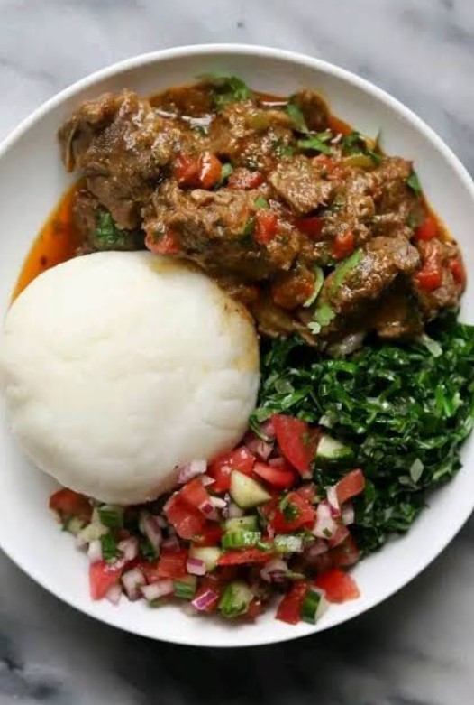

Teff and maize
Teff is used to make Ethiopian injera, while maize flour is widely used for ugali and other staple foods.
A region where ancient traditions, vibrant spices and shared meals bring communities together.

East African cuisine reflects the diversity of its people, landscapes and histories. From the highlands of Ethiopia to the lakes of Uganda and the coast of Tanzania, every community brings its own ingredients and cooking traditions to the table.
Meals often feature grains, bananas, beans, root vegetables, fresh produce and locally available meats and fish. Coastal cooking also draws on coconut, seafood and aromatic spices.
Food is more than nourishment. It is a way of expressing hospitality, celebrating heritage and bringing families together.
Local ingredients form the foundation of many traditional East African meals.
Teff is used to make Ethiopian injera, while maize flour is widely used for ugali and other staple foods.
Green bananas and plantains are cooked, steamed or mashed into filling traditional meals.
Cassava roots and processed leaves are used in different dishes, including Rwanda's much-loved isombe.
These provide important sources of protein and feature in stews, sauces and vegetarian meals.
Particularly along the Indian Ocean coast, coconut milk and aromatic spices enrich many rice, fish and vegetable dishes.
Fish from lakes and coastal waters, alongside grilled and stewed meats, contribute to the region's varied food traditions.
Cooking methods vary across communities, but traditional techniques continue to shape the region's distinctive flavours and textures.
Fermentation gives Ethiopian injera its characteristic flavour and soft, spongy texture.
Foods such as green bananas and root vegetables are often steamed or boiled before serving.
Grilling over charcoal or open flames gives meats such as nyama choma their distinctive smoky flavour.
Beans, vegetables and meats are simmered with spices and sauces to develop rich flavours.
Discover some of the dishes that make East African cuisine memorable.

A fermented flatbread traditionally made with teff flour. It serves as both the foundation of a meal and a way to scoop up accompanying stews.
Explore the recipe →
A traditional Rwandan dish prepared with cassava leaves, often combined with groundnuts and other ingredients to create a rich, comforting meal.
Explore the recipe →
A popular combination of firm maize meal and grilled meat, often enjoyed with vegetables and shared among family and friends.
Discover more recipes →Explore the flavours, presentation and traditions of Ethiopian cuisine through this food journey.
This video focuses specifically on Ethiopian cuisine, one part of East Africa's wider culinary heritage.
Continue your culinary journey through the continent's diverse food traditions.